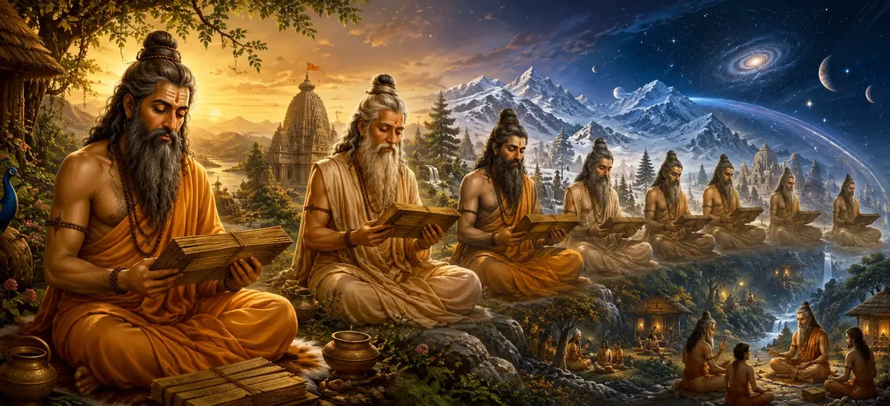

The Incarnations of Vyasa
The forty-third chapter of the Vayaviya Samhita unfolds the divine incarnations and sacred mission of Sage Vyasa across cosmic epochs.
Sage Vayu narrates how the great compiler of scriptures takes birth in successive ages to organize, preserve, and propagate spiritual knowledge.
This chapter highlights the paramount role of Vyasa in maintaining the continuity of Vedic wisdom for human upliftment.
Chapter 43 Highlights
Divine Lineage
Details the cosmic origins and incarnations of Sage Vyasa.
Vedic Compilation
Explains how Vyasa divides and preserves the Vedas in each Yuga.
Puranic Wisdom
Highlights the composition of the sacred Puranas for all.
Age Transitions
Examines Vyasa's appearances across different Dwapara Yugas.
Spiritual Legacy
Honors the supreme master who guides humanity's spiritual evolution.
Narrative Flow
Leads into Chapter 44 on Shiva's Incarnations as Yoga Teachers.
Core Topics in This Chapter
Introduction to the Incarnations of Vyasa
Rishi Vayu begins by explaining that Sage Vyasa is not merely an ordinary mortal but a specialized divine manifestation entrusted with safeguarding sacred knowledge.
In every cycle of creation, a Vyasa appears to arrange the Vedas so that humanity can easily study and practice them.
Vyasa's Mission Across Successive Epochs
The chapter outlines how multiple Vyasas have appeared across past Manvantaras and Dwapara Yugas to adapt spiritual teachings to changing human capacities.
Each incarnation fulfills the crucial task of upholding Dharma when intellectual and spiritual vigor decline.
The Sacred Division of the Single Veda
In ancient times, spiritual knowledge was unified, but as human intellect diminished, Vyasa divided the single Veda into four principal branches: Rig, Yajur, Sama, and Atharva.
This monumental act made sacred wisdom accessible to students across generations.
Composition of the Eighteen Puranas
Recognizing the need for accessible narratives, Vyasa composed the eighteen Mahapuranas and the epic Mahabharata, embedding profound Vedic truths in stories.
These texts serve as beacons of light for all seekers.
Empowerment Through Lord Shiva's Grace
Vyasa accomplishes his monumental literary and spiritual feats entirely through the supreme grace and inner inspiration granted by Lord Shiva.
His intellect shines with divine brilliance, enabling him to comprehend past, present, and future.
Conclusion of the Vyasa Incarnations Account
Chapter 43 concludes by revering Sage Vyasa as the ultimate master of scriptural preservation, setting the stage for the next discourse.
The assembly of sages listens with rapt attention to the glorious heritage of divine teachers.
Transition to Chapter 44
Following the account of Vyasa's incarnations, Rishi Vayu prepares to narrate Chapter 44, 'Shiva's Incarnations as Yoga Teachers'.
This subsequent chapter details how Lord Shiva incarnates as the supreme teacher of Yoga to guide humanity toward liberation.
Key Teachings of Chapter 43
Divine Mission
Vyasa embodies a special cosmic mandate to preserve sacred lore.
Vedic Division
Adapts ancient wisdom into structured branches for each era.
Puranic Guidance
Composes Puranas to make truth accessible through narratives.
Shiva's Grace
All literary achievements flow from the grace of Lord Shiva.
Episodic Births
Reappears across Dwapara Yugas to uphold spiritual order.
Next Chapter
Leads into Shiva's incarnations as Yoga teachers in Chapter 44.
Spiritual Reflection
The dedicated transmission of spiritual knowledge across ages reminds us of the divine compassion that continuously guides humanity toward light and truth.
Living the Message of Chapter 43
Reverence the sacred scriptures and the great sages who preserved them for posterity.
Study the Puranas and Vedas with devotion to understand the deeper truths of existence.
Acknowledge that true wisdom is a manifestation of divine grace.
Key Spiritual Concepts
The divine manifestation of the scripture compiler.
The sacred division of the unified Veda into four branches.
The composition of the eighteen Mahapuranas.
The recurring mission of Vyasa in successive Dwapara epochs.
The supreme grace empowering spiritual authorship.
The prelude to Shiva's incarnations as Yoga teachers in Chapter 44.
Chapter Summary
Vayaviya Samhita Chapter 43 presents The Incarnations of Vyasa. Detailing the divine lineage, mission, and literary contributions of Sage Vyasa across successive ages, the chapter explains how the single Veda was divided and the Puranas composed through Lord Shiva's grace. It sets the stage for Chapter 44, 'Shiva's Incarnations as Yoga Teachers'.
Frequently Asked Questions
1. What is the primary subject of Vayaviya Samhita Chapter 43?
Chapter 43 details the divine incarnations, lineage, and sacred contributions of Sage Vyasa in compiling and preserving the Vedic literature.
2. Who is Sage Vyasa in the context of the Puranas?
Sage Vyasa is an incarnation of Lord Vishnu/Lord Shiva's grace who divides the Vedas and composes the holy Puranas for humanity's spiritual welfare.
3. Why are Vyasa's incarnations significant across ages?
They appear in different Manvantaras and Dwapara Yugas to adapt spiritual teachings to the changing capacities of humankind.
4. Who narrates the account of Vyasa's incarnations?
The account is expounded by Rishi Vayu within the Vayaviya Samhita.
5. What is the next chapter for navigation after Chapter 43?
The next chapter for navigation is titled 'Shiva's Incarnations as Yoga Teachers'.
“Through the grace of Lord Shiva, Sage Vyasa incarnates across ages to preserve the eternal Vedas and Puranas for the ultimate liberation of humanity.”
Continue Through Vayaviya Samhita
Chapter 43 concludes The Incarnations of Vyasa. Continue to Shiva's Incarnations as Yoga Teachers.